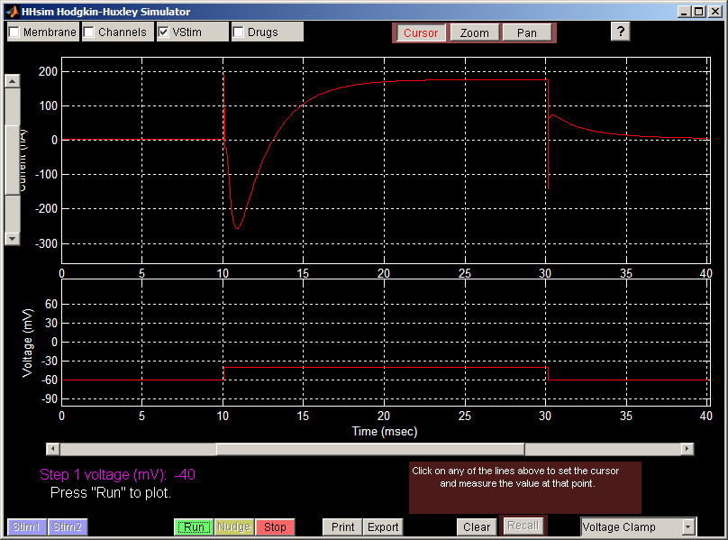
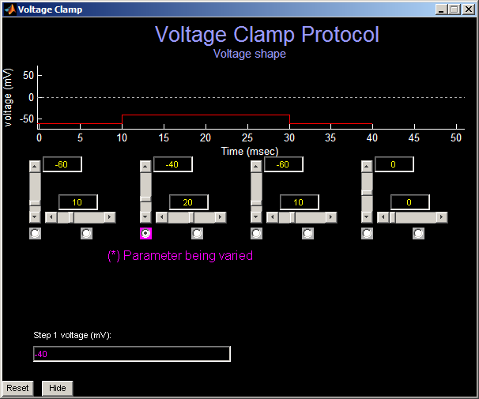

На рисунке выше ступенька потенциала (нижний график) уже подана; возникающий в ответ ток показан на верхнем графике. Построение запускается зелёной кнопкой «Пуск».

С помощью этих элементов управления один из параметров можно систематически варьировать, оставляя остальные неизменными. Варьируемый параметр отмечен фиолетовым переключателем; на рисунке выше это потенциал ступени 1. Поле ввода в нижней части окна содержит набор значений этого параметра, разделённых пробелами. Например, три значения можно задать, введя «-40 -25 -10» (без кавычек) в нижнее текстовое поле.
При нажатии зелёной кнопки «Пуск» в главном окне HHsim по очереди проводит моделирование для каждой кривой стимула, показанной в окне «Фиксация потенциала». Если снова нажать «Пуск», будут построены новые кривые другого цвета поверх первых. Чтобы этого избежать, нажмите кнопку «Очистить» в главном окне, прежде чем снова нажимать «Пуск».
Если нужно варьировать сразу несколько параметров стимула, например одновременно потенциал и длительность ступени 1, это можно сделать вручную. Настройте первую кривую ползунками, нажмите «Пуск», затем настройте следующую кривую, снова нажмите «Пуск» и так далее. Не нажимая «Очистить», можно также сравнить действие стимулов в присутствии и в отсутствие препарата. Настройте семейство кривых и нажмите «Пуск». Затем примените препарат в окне «Препараты» и снова нажмите «Пуск», чтобы провести те же стимулы. Будет построен ещё один набор линий другого цвета поверх первого. Всего можно построить восемь линий.
Назад, к руководству по работе с HHsim